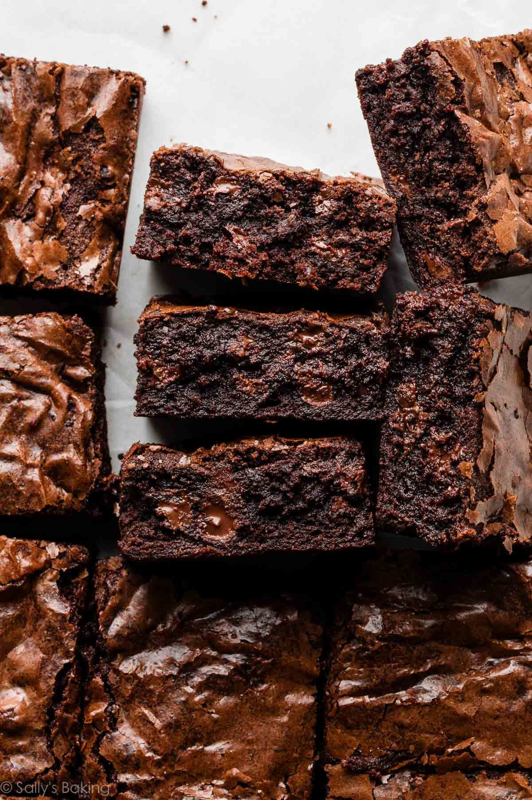

Brownie

Description
These seriously fudgy homemade brownies are thick, dense, and intensely
chocolatey thanks to cocoa powder, melted baking chocolate, and chocolate
chips. With shiny crackly tops and melt-in-your-mouth centers, this is a
go-to brownie recipe.
Ingredients
- 3/4 cup (170g) unsalted butter
- 113g semi-sweet chocolate (chopped)
- 1 & 2/3 cups (333g) granulated sugar
- 3 large eggs
- 2 teaspoons vanilla extract
- 1 cup (84g) cocoa powder
- 1 cup (125g) all purpose flour
- 3/4 teaspon salt
- 1 cup (180g) chocolate chips
Steps
-
Preheat the oven to 177°C and line a 9-inch square metal baking pan with
parchment paper.
-
In a small microwave-safe bowl or liquid measuring cup, combine the
butter and half (56g) of the chopped chocolate. Melt in 30-second
increments, stirring after each, until completely melted and smooth. Set
aside to slightly cool while you continue.
-
In a large bowl with a handheld or stand mixer fitted with a whisk
attachment, combine the sugar and eggs. Beat on medium-high speed until
the sugar is dissolved and the mixture is pale and ribbon-y, about 3
minutes.
-
Pour the warm melted butter/chocolate into the bowl with the sugar/eggs,
add the vanilla, and beat or whisk to combine.
-
With a fine mesh sieve, sift the cocoa powder and flour into the batter,
add the salt, then whisk or beat on low speed to incorporate. Fold in
the remaining 57g chopped chocolate and the chocolate chips. The batter
will be very thick. Spread it evenly into the prepared pan.
-
Bake for 28–30 minutes, then test the brownies with a toothpick. Insert
the toothpick into the center of the pan. If it comes out coated with
wet batter, the brownies are not done. If there are only a few moist
crumbs, the brownies are done. Keep checking every 2 minutes until you
have moist crumbs. Brownies typically take 30–32 minutes in my oven. Err
on the side of under-baking, as the brownies will continue to set as
they cool.
-
Remove from the oven and place on a cooling rack to cool completely in
the pan. When cool, lift the brownies out by gripping the parchment
overhangs and transfer to a cutting board. Use a sharp knife to cut into
squares.
-
Cover and store leftover brownies at room temperature for up to 1 week.
Home